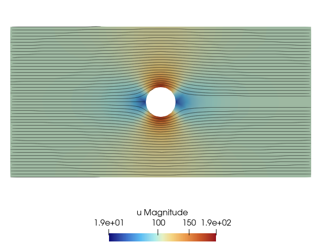
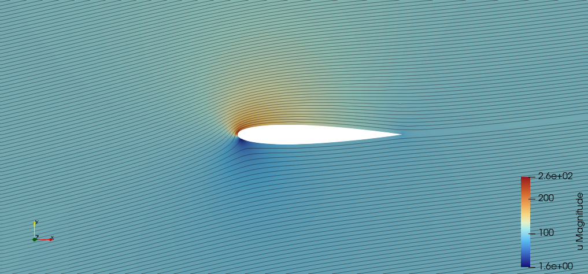

2D Potential flow (FEM)
In this example, we build a potential flow solver in 2D with finite elements.
Part 1: the Laplace equation
See for instance Wikipedia for more information about the theory. Let $\phi$ be the velocity potential, i.e. the velocity $u$ is defined as $u = \nabla \phi$. The equation ruling this potential is a Laplace equation, $\Delta \phi = 0$ in the domain $\Omega$; along with Neumann conditions:
- $u \cdot n = u_{farfield} \cdot n$, i.e. $\nabla \phi \cdot n = u_{farfield} \cdot n$ far from the obstacle (denoted $\Gamma_{farfield}$);
- $u \cdot n = 0$, i.e. $\nabla \phi \cdot n = 0$ on the obstacle surface (denoted $\Gamma_{wall}$).
Note that the Laplace equation doesn't have a unique solution if only Neumann boundary conditions are imposed. We need additional condition(s). Since two potentials give the same velocity field if they only differ by a constant, we are free to add the following mean condition: $\int_\Omega \phi = 0$.
To sum up, the potential $\phi$ must satisfy the following problem:
\[ \begin{cases} \Delta \phi = 0 \text{ in } \Omega,\\ \nabla \phi \cdot n = 0 \text{ on } \Gamma_{wall},\\ \nabla \phi \cdot n = u_{farfield} \cdot n \text{ on } \Gamma_{farfield},\\ \int_\Omega \phi = 0. \end{cases}\]
The mean constraint will be ensured using a Lagrange multiplier, see the "constrained Poisson" example for more details. The weak form reads: find $(\phi, \lambda_u)$ such that
\[ \forall (\varphi, \lambda_v) \int \left[ \nabla \phi \cdot \nabla \varphi + \lambda_u \varphi + \phi \lambda_v \right] \, \mathrm{d}\Omega - \int \left[ \varphi u_{farfield} \cdot n \right]\, \mathrm{d}\Gamma_{farfield} = 0\]
For this first part, we solve the flow around a circle. We'll need:
using Bcube # to discretize the problem
using BcubeGmsh # to read the mesh
using BcubeVTK # to export the results
using LinearAlgebra # we always need this guyLet's define the two settings for this simulation: the farfield velocity and the degree of the Lagrange polynomials
u_farfield = [100.0, 0.0]
degree = 2 # P2 elements for this tutorialNow, read the mesh and build the necessary domains and associated measures:
mesh =
read_mesh(joinpath(@__DIR__, "..", "..", "input", "mesh", "potential-flow-circle.msh"))
dΩ = Measure(CellDomain(mesh), max(2degree-1, 1))
dΓ = Measure(BoundaryFaceDomain(mesh, ("xmin", "xmax", "ymin", "ymax")), max(2degree, 1))
nΓ = get_face_normals(dΓ)Build the two FESpaces: one for the potential, one for the Lagrange multiplier
U_u = TrialFESpace(FunctionSpace(:Lagrange, degree), mesh)
V_u = TestFESpace(U_u)
U_λ = MultiplierFESpace(mesh, 1)
V_λ = TestFESpace(U_λ)Group them into a MultiFESpace to be able to assemble the global system
U = MultiFESpace(U_u, U_λ)
V = MultiFESpace(V_u, V_λ)Next, define the bilinear and the linear forms. Note that due to a current limitation, the linear form must explicitly contain λᵥ, although it is absent from the weak form. Hence the 0 * side_n(λᵥ) term.
a((ϕ, λᵤ), (φ, λᵥ)) = ∫(∇(ϕ) ⋅ ∇(φ) + λᵤ * φ + ϕ * λᵥ)dΩ
l((φ, λᵥ)) = ∫(side_n(φ) * side_n(u_farfield) ⋅ side_n(nΓ) + 0 * side_n(λᵥ))dΓIt is now possible to assemble and solve the linear system to obtain the potential (represented as a FEFunction) and the Lagrange multiplier.
sys = AffineFESystem(a, l, U, V)
ϕ, λ = Bcube.solve(sys)Finally, write both the potential and the velocity field to a VTK file.
Warning
By default the solution will be output on mesh vertices, but note that with P1 elements, the gradient is only P0 and should rigorously be output at cell centers.
outdir = joinpath(@__DIR__, "tmp")
mkpath(outdir)
write_file(joinpath(outdir, "potential-flow-circle.pvd"), mesh, Dict("ϕ" => ϕ, "u" => ∇(ϕ)))The final result looks like this:

Part 2: the Kutta condition
In its simplest form, the potential flow Laplace equation is known to suffer from several drawbacks, and notably violates the Kutta condition (again, check out the Wikipedia page for more details). For instance, try the above code on a mesh of a NACA airfoil with some angle of attack, and the result will look suspicious because the streamlines do not exit the airfoil near the trailing edge.
In this second part, we implement a correction to respect the Kutta condition. The idea is to add a second potential, $\psi$ with the harmonic property $\Delta \psi = 0$. It thus offers an additional degree of freedom in terms of scale. More precisely, the full flow potential is now written $\bar{\phi} = \phi + \mathscr{C} \psi$ where $\mathscr{C} \in \mathbb{R}$ is the additional degree of freedom and is called the circulation. With this additional unknown, we can enforce the Kutta condition, translated here as "the tangential velocity must be equal on both sides of the trailing edge":
\[ u^+_{TE} \cdot t^+ = u^-_{TE} \cdot t^-\]
where $t^+$ is the tangent vector of one of the faces sharing the trailing edge node, and $t^-$ is the one on the other face. The same goes for the velocities $u^+_{TE}$ and $u^-_{TE}$. For the additional harmonic potential we select $\psi = (1/2\pi)atan2(y-y_c,x-x_c)$ where $(x_c,y_c)$ are the coordinates of a point inside the obstacle. The full problem for the two unknowns $\phi$ and $\mathscr{C}$ then reads
\[ \begin{cases} \Delta \bar{\phi} = 0 \text{ in } \Omega,\\ \nabla \bar{\phi} \cdot n = 0 \text{ on } \Gamma_{wall},\\ \nabla \bar{\phi} \cdot n = u_{farfield} \cdot n \text{ on } \Gamma_{farfield},\\ \int_\Omega \phi = 0,\\ \nabla(\bar{\phi})^+_{TE} \cdot t^+ = \nabla(\bar{\phi})^-_{TE} \cdot t^-,\\ \bar{\phi} = \phi + \mathscr{C} \psi. \end{cases}\]
Note that the mean constraint condition can be applied indifferently to $\bar{\phi}$ or $\phi$.
Now, the weak form of the problem reads: find $(\phi, \lambda_u, \mathscr{C})$ such that
\[ \begin{cases} \forall (\varphi, \lambda_v) \int \left[ (\nabla \phi + \mathscr{C} \nabla \psi) \cdot \nabla \varphi + \lambda_u \varphi + \phi \lambda_v \right] \, \mathrm{d}\Omega - \int \left[ \varphi u_{farfield} \cdot n \right]\, \mathrm{d}\Gamma_{farfield} = 0,\\ (\nabla \phi + \mathscr{C}\nabla \psi)^+_{TE} \cdot t^+ = (\nabla \phi + \mathscr{C}\nabla \psi)^-_{TE} \cdot t^-. \end{cases}\]
There are several methods to solve this problem. We could use another Lagrange multiplier for $\mathscr{C}$. However, note that the problem is actually linear with respect to $\mathscr{C}$; in matrix form it reads $A \phi + \mathscr{C} B = C$. Hence, solving the system for two different values of $\mathscr{C}$ is enough to determine the solution. This is what is done here.
Let's read a second mesh, with a different farfield condition
θ = deg2rad(10)
u_farfield = 100 .* [cos(θ), sin(θ)]
mesh = read_mesh(joinpath(@__DIR__, "..", "..", "input", "mesh", "naca0012_o1.msh"))Define the necessary domains and measures
quad_min = 2
dΩ = Measure(CellDomain(mesh), max(2degree-1, quad_min))
dΓ_farfield = Measure(BoundaryFaceDomain(mesh, "FARFIELD"), max(2degree, quad_min))
nΓ_farfield = get_face_normals(dΓ_farfield)
Γ_wall = BoundaryFaceDomain(mesh, "NACA")
dΓ_wall = Measure(Γ_wall, max(2degree, quad_min))
nΓ_wall = get_face_normals(dΓ_wall)The FESpaces...
U_u = TrialFESpace(FunctionSpace(:Lagrange, degree), mesh)
V_u = TestFESpace(U_u)
U_λ = MultiplierFESpace(mesh, 1)
V_λ = TestFESpace(U_λ)
U = MultiFESpace(U_u, U_λ)
V = MultiFESpace(V_u, V_λ)Now, we need to identify the trailing edge. This technical step is not detailed; the mostly uncommented code is given below. The idea is as follows. Starting from a BoundaryFaceDomain, we build an explicit mesh of it with Bcube.domain_to_mesh. We then loop over the cells (i.e. the edges of the airfoil) and compute the angle between two consecutive edges. The trailing edge is the node where two edges meet at the sharpest angle, which is also where the dot product of their directions is maximal. This identifies the trailing edge node together with the two edges meeting at it.
function identify_trailing_edges(Γ)
mesh = Bcube.domain_to_mesh(Γ)
@assert topodim(mesh) == 1
c2n = Bcube.connectivities_indices(mesh, :c2n)
n2c, new2old = Bcube.inverse_connectivity(c2n)
old2new = invperm(new2old)
xc = get_cell_centers(mesh)
xn = get_coords.(get_nodes(mesh))
dot_products = map(1:nnodes(mesh)) do inode
knode = old2new[inode]
@assert length(n2c[knode]) == 2 "Node $inode has neighbor cell(s) : $(n2c[inode])"
icell, jcell = n2c[knode]
# we could do better using conormals
t1 = normalize(xn[inode] - xc[icell])
t2 = normalize(xn[inode] - xc[jcell])
return t1 ⋅ t2
end
# Identify
i_trail = argmax(dot_products)
@info "Detected trailing edge node with coords $(xn[i_trail])"
metadata = Bcube.get_metadata(parent(mesh))
node_l2g = Bcube.get_node_loc_to_glob(metadata)
cell_l2g = Bcube.get_elt_loc_to_glob(metadata)
# Gather geom infos
icell, jcell = n2c[old2new[i_trail]]
t1 = normalize(xn[i_trail] - xc[icell])
t2 = normalize(xn[i_trail] - xc[jcell])
@show t1, t2
inode = node_l2g[i_trail]
iface = cell_l2g[icell]
jface = cell_l2g[jcell]
return inode, iface, jface, t1, t2
endLet's call this function, and build a MeshFaceData containing the tangent vectors only for the edges attached to the trailing edge. This will ease the computation of the Kutta condition.
inode, iface, jface, t1, t2 = identify_trailing_edges(Γ_wall)
_tangents = fill([0.0, 0.0], Bcube.nfaces(mesh)) # all tangents are zero by default
_tangents[iface] = t1
_tangents[jface] = t2
tangents = MeshFaceData(_tangents)Now, define the harmonic potential ψ. Recall that ψ requires choosing a point $(x_c, y_c)$ inside the obstacle. The constraint "any point inside the obstacle" is rather loose, but sufficient for this simple geometry: we simply take the barycenter of the airfoil nodes.
mesh_wall = Bcube.domain_to_mesh(Γ_wall)
xn = get_coords.(get_nodes(mesh_wall))
xc = sum(xn) ./ length(xn)
println("Center used to define ψ : $xc")
ψ = PhysicalFunction(xy -> 1/(2π) * atan(xy[2] - xc[2], xy[1] - xc[1]))Define the bilinear form and the two linear forms
#! format: off
a((ϕ, λᵤ), (φ, λᵥ)) = ∫(∇(ϕ) ⋅ ∇(φ) + λᵤ * φ + ϕ * λᵥ)dΩ
b((φ, λᵥ)) = ∫(∇(ψ) ⋅ ∇(φ))dΩ
c((φ, λᵥ)) = ∫(side_n(φ) * (side_n(u_farfield)) ⋅ side_n(nΓ_farfield) + 0 * side_n(λᵥ))dΓ_farfield
#! format: onAssemble them
A = assemble_bilinear(a, U, V)
B = assemble_linear(b, V)
C = assemble_linear(c, V)Factorize the A matrix since it will be used twice in a linear system.
Afac = factorize(A)As explained above, we now have to solve the system $A\phi + \mathscr{C} B = C$ for two different values of $\mathscr{C}$, and then compute the difference of tangential velocities at the trailing edge. We thus write a function for that. Note the use of Bcube.compute to evaluate the integrals $\int_{E^+} u \cdot t$ and $\int_{E^-} u \cdot t$ rather than evaluating these values on the trailing node only.
function compute_J(Γ)
x = Afac\(C - Γ*B)
ϕₕ, _ = FEFunction(U, x)
y = Bcube.compute(∫(side_n(∇(ϕₕ) + Γ*∇(ψ)) ⋅ side_n(tangents))dΓ_wall)
J = y[iface] - y[jface]
return J, ϕₕ
endFinally, we solve for the circulation $\mathscr{C}$ that enforces the Kutta condition
J0, ϕ0 = compute_J(0.0)
J1, ϕ1 = compute_J(1.0)
𝒞 = -J0 / (J1-J0)
ϕ = ϕ0 + 𝒞*(ϕ1-ϕ0)Recompose the full solution and output it
ϕ_tot = ϕ + 𝒞*ψ
write_file(
joinpath(outdir, "potential-flow-naca.pvd"),
mesh,
Dict("ϕ" => ϕ_tot, "u" => ∇(ϕ_tot)),
)This is the final result, far more satisfying than without ensuring the Kutta condition!

This page was generated using Literate.jl.